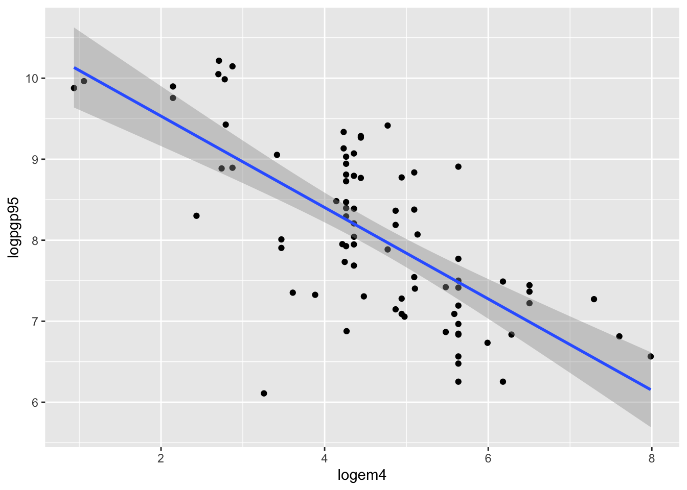
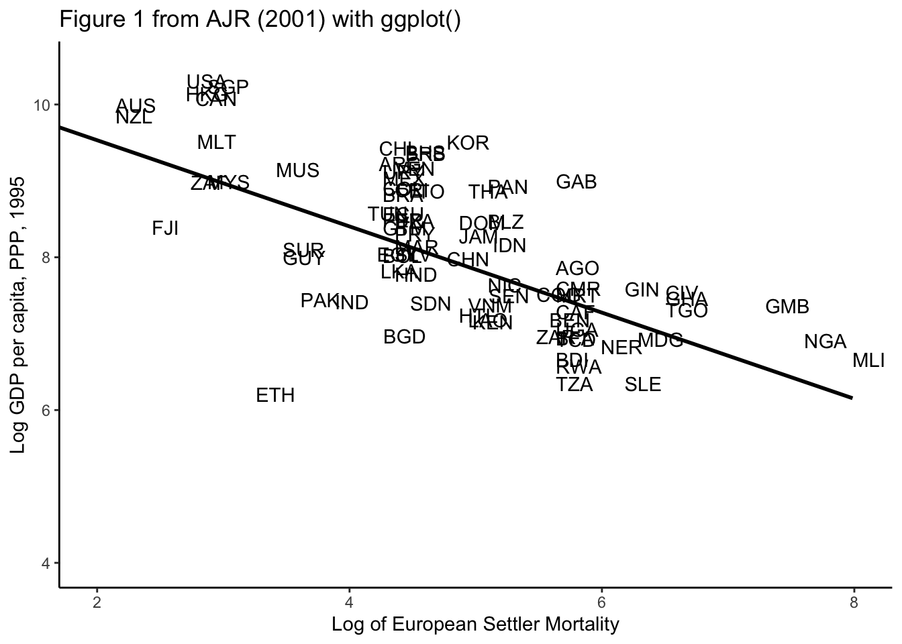

library(tseries)Registered S3 method overwritten by 'quantmod':
method from
as.zoo.data.frame zoo Import Data
AUS AUT BEL CAN DNK FIN FRA DEU ITA JPN NLD NOR SWE
1 2673.5 1066.8 1542.9 NaN 1179.0 NaN 1036.3 602.0 1276.2 NaN NaN 900.5 NaN
2 2400.3 1133.6 1534.4 NaN 1173.6 NaN 1110.6 573.6 1258.2 NaN NaN 908.6 NaN
3 2591.1 1132.0 1614.7 NaN 1227.6 NaN 1194.4 610.0 1238.5 NaN NaN 960.4 NaN
4 2790.2 1095.7 1612.5 NaN 1209.7 NaN 1116.7 631.3 1279.5 NaN NaN 973.5 NaN
5 2798.7 1134.6 1652.4 NaN 1232.4 NaN 1254.1 671.0 1271.8 NaN NaN 997.1 NaN
6 3008.8 1130.2 1635.8 NaN 1241.2 NaN 1300.2 666.6 1298.4 NaN NaN 1016.0 NaN
GBR USA
1 1949.4 1596.0
2 2038.9 1654.6
3 2022.1 1736.6
4 2051.2 1720.6
5 2065.1 1671.8
6 2095.3 1690.7Bind the Column and Data set together = cbind()
startyear <- 1870
year <- seq(from=startyear, to= 1987, by=1)
data_GDP <- cbind(year, data)
head(data_GDP) # new year column year AUS AUT BEL CAN DNK FIN FRA DEU ITA JPN NLD NOR
1 1870 2673.5 1066.8 1542.9 NaN 1179.0 NaN 1036.3 602.0 1276.2 NaN NaN 900.5
2 1871 2400.3 1133.6 1534.4 NaN 1173.6 NaN 1110.6 573.6 1258.2 NaN NaN 908.6
3 1872 2591.1 1132.0 1614.7 NaN 1227.6 NaN 1194.4 610.0 1238.5 NaN NaN 960.4
4 1873 2790.2 1095.7 1612.5 NaN 1209.7 NaN 1116.7 631.3 1279.5 NaN NaN 973.5
5 1874 2798.7 1134.6 1652.4 NaN 1232.4 NaN 1254.1 671.0 1271.8 NaN NaN 997.1
6 1875 3008.8 1130.2 1635.8 NaN 1241.2 NaN 1300.2 666.6 1298.4 NaN NaN 1016.0
SWE GBR USA
1 NaN 1949.4 1596.0
2 NaN 2038.9 1654.6
3 NaN 2022.1 1736.6
4 NaN 2051.2 1720.6
5 NaN 2065.1 1671.8
6 NaN 2095.3 1690.7Define Time Series
[1] "mts" "ts" "matrix"MTS = multiple Time Series
apply diff
=> Growth Rate of Log GDP in USA
Plot
Warning: package 'plm' was built under R version 4.1.2Warning: package 'stargazer' was built under R version 4.1.2
Please cite as: Hlavac, Marek (2022). stargazer: Well-Formatted Regression and Summary Statistics Tables. R package version 5.2.3. https://CRAN.R-project.org/package=stargazer nr year agric black bus construc ent exper fin hisp poorhlth hours manuf
1 13 1980 0 0 1 0 0 1 0 0 0 2672 0
2 13 1981 0 0 0 0 0 2 0 0 0 2320 0
3 13 1982 0 0 1 0 0 3 0 0 0 2940 0
4 13 1983 0 0 1 0 0 4 0 0 0 2960 0
5 13 1984 0 0 0 0 0 5 0 0 0 3071 0
6 13 1985 0 0 1 0 0 6 0 0 0 2864 0
married min nrthcen nrtheast occ1 occ2 occ3 occ4 occ5 occ6 occ7 occ8 occ9 per
1 0 0 0 1 0 0 0 0 0 0 0 0 1 0
2 0 0 0 1 0 0 0 0 0 0 0 0 1 1
3 0 0 0 1 0 0 0 0 0 0 0 0 1 0
4 0 0 0 1 0 0 0 0 0 0 0 0 1 0
5 0 0 0 1 0 0 0 0 1 0 0 0 0 1
6 0 0 0 1 0 1 0 0 0 0 0 0 0 0
pro pub rur south educ tra trad union lwage d81 d82 d83 d84 d85 d86 d87
1 0 0 0 0 14 0 0 0 1.197540 0 0 0 0 0 0 0
2 0 0 0 0 14 0 0 1 1.853060 1 0 0 0 0 0 0
3 0 0 0 0 14 0 0 0 1.344462 0 1 0 0 0 0 0
4 0 0 0 0 14 0 0 0 1.433213 0 0 1 0 0 0 0
5 0 0 0 0 14 0 0 0 1.568125 0 0 0 1 0 0 0
6 0 0 0 0 14 0 0 0 1.699891 0 0 0 0 1 0 0
expersq
1 1
2 4
3 9
4 16
5 25
6 36Get Panel Data from thsi with pdata.frame()
wagepan.p <- pdata.frame(wagepan, index=c("nr","year") ) #added HA: individual index and time index
pdim(wagepan.p)Balanced Panel: n = 545, T = 8, N = 4360Regressions with plm()
1) Simple linear Regression with all data pooled
2) now same as above but with controls
3) estimate fixed effects model (based on “within-transformation” of data) <–> pooling model
NOTE: use for my Acemoglu Paper!!
Summary
Oneway (individual) effect Within Model
Call:
plm(formula = lwage ~ married + union + educ + exper, data = wagepan.p,
model = "within")
Balanced Panel: n = 545, T = 8, N = 4360
Residuals:
Min. 1st Qu. Median 3rd Qu. Max.
-4.14628 -0.12503 0.01232 0.16205 1.48094
Coefficients:
Estimate Std. Error t-value Pr(>|t|)
married 0.0610384 0.0182929 3.3367 0.0008558 ***
union 0.0837910 0.0194140 4.3160 1.629e-05 ***
exper 0.0598672 0.0025835 23.1726 < 2.2e-16 ***
---
Signif. codes: 0 '***' 0.001 '**' 0.01 '*' 0.05 '.' 0.1 ' ' 1
Total Sum of Squares: 572.05
Residual Sum of Squares: 476.43
R-Squared: 0.16715
Adj. R-Squared: 0.047646
F-statistic: 255.026 on 3 and 3812 DF, p-value: < 2.22e-164) same, but with year dummy for shock absorption
Used with factor(year) for easy year incuding of the variables
Combine all and get stargazer to analyze it
mywagemodels <- list(wagemodel1,wagemodel2,wagemodel3,wagemodel4)
stargazer(
mywagemodels,
type="html"
#out="data/mywagemodels.html"
)| Dependent variable: | ||||
| lwage | ||||
| (1) | (2) | (3) | (4) | |
| married | 0.174*** | 0.113*** | 0.061*** | 0.111*** |
| (0.016) | (0.016) | (0.018) | (0.016) | |
| black | -0.145*** | -0.140*** | ||
| (0.023) | (0.023) | |||
| union | 0.169*** | 0.184*** | 0.084*** | 0.187*** |
| (0.018) | (0.017) | (0.019) | (0.017) | |
| educ | 0.103*** | 0.092*** | ||
| (0.004) | (0.005) | |||
| exper | 0.025*** | 0.050*** | 0.060*** | 0.030*** |
| (0.003) | (0.003) | (0.003) | (0.005) | |
| factor(year)1981 | 0.078*** | |||
| (0.030) | ||||
| factor(year)1982 | 0.097*** | |||
| (0.031) | ||||
| factor(year)1983 | 0.107*** | |||
| (0.033) | ||||
| factor(year)1984 | 0.140*** | |||
| (0.036) | ||||
| factor(year)1985 | 0.160*** | |||
| (0.040) | ||||
| factor(year)1986 | 0.188*** | |||
| (0.044) | ||||
| factor(year)1987 | 0.211*** | |||
| (0.048) | ||||
| Constant | 1.370*** | 0.031 | 0.164** | |
| (0.020) | (0.062) | (0.074) | ||
| Observations | 4,360 | 4,360 | 4,360 | 4,360 |
| R2 | 0.077 | 0.183 | 0.167 | 0.188 |
| Adjusted R2 | 0.076 | 0.183 | 0.048 | 0.185 |
| F Statistic | 120.319*** (df = 3; 4356) | 195.684*** (df = 5; 4354) | 255.026*** (df = 3; 3812) | 83.642*** (df = 12; 4347) |
| Note: | p<0.1; p<0.05; p<0.01 | |||
── Attaching packages ─────────────────────────────────────── tidyverse 1.3.1 ──✓ ggplot2 3.3.5 ✓ purrr 0.3.4
✓ tibble 3.1.5 ✓ dplyr 1.0.7
✓ tidyr 1.1.4 ✓ stringr 1.4.0
✓ readr 2.0.2 ✓ forcats 0.5.1── Conflicts ────────────────────────────────────────── tidyverse_conflicts() ──
x dplyr::between() masks plm::between()
x dplyr::filter() masks stats::filter()
x dplyr::lag() masks plm::lag(), stats::lag()
x dplyr::lead() masks plm::lead()Replicating the Data from AJR 2001
shortnam lat_abst avexpr logpgp95 baseco logem4 africa asia loghjypl
1 AFG 0.3666667 NA NA NA 4.540098 0 1 NA
2 AGO 0.1366667 5.363636 7.770645 1 5.634789 1 0 -3.4112477
3 ARE 0.2666667 7.181818 9.804219 NA NA 0 1 NA
4 ARG 0.3777778 6.386364 9.133459 1 4.232656 0 0 -0.8722738
5 ARM 0.4444444 NA 7.682482 NA NA 0 1 NA
6 AUS 0.3000000 9.318182 9.897972 1 2.145931 0 0 -0.1707883
other rich4 catho80 muslim80 no_cpm80 f_brit f_french sjlofr avelf
1 0 0 0.0 99.3 0.6999969 1 0 1 0.4484412
2 0 0 68.7 0.0 11.5000038 0 0 1 0.7727550
3 0 0 0.4 94.9 4.3999987 1 0 0 NA
4 0 0 91.6 0.2 5.5000014 0 0 1 0.1769318
5 0 0 0.0 0.0 100.0000000 0 0 0 NA
6 1 1 29.6 0.2 46.7000008 1 0 0 0.1127971
temp1 temp2 temp3 temp4 temp5 humid1 humid2 humid3 humid4 steplow deslow
1 10 14 40 -21 11 51 80 22 70 1 1
2 26 28 37 14 21 77 84 74 78 1 1
3 NA NA NA NA NA NA NA NA NA NA NA
4 17 25 40 -6 6 81 92 60 79 1 0
5 8 12 40 -27 10 62 91 36 75 0 0
6 17 18 43 -10 3 56 85 35 64 1 1
stepmid desmid drystep drywint edes1975 landlock goldm iron silv zinc oilres
1 0 0 0 0 0 1 0 0 0 0 0
2 0 0 0 0 0 0 0 0 0 0 146000
3 NA NA NA NA 0 0 NA NA NA NA NA
4 0 1 0 0 90 0 0 0 0 0 46900
5 1 0 0 0 0 0 0 0 0 0 0
6 0 0 0 0 99 0 3 16 9 12 99100
malfal94 yellow leb95 imr95 meantemp lt100km latabs euro1900 democ1 cons1
1 0.00372 0 NA NA NA NA NA 0 1 1
2 0.95000 1 46.49 125.0 22.94133 0.118758 0.136667 8 0 3
3 0.01230 0 NA NA NA NA NA 0 NA NA
4 0.00000 0 72.89 21.8 17.10000 0.123089 0.377778 60 1 1
5 0.00000 0 NA NA NA NA NA 0 NA NA
6 0.00000 1 78.25 5.6 20.90000 0.198958 0.300000 98 10 7
indtime democ00a cons00a
1 195 1 1
2 20 0 1
3 NA NA NA
4 170 3 3
5 NA NA NA
6 94 10 7Simple:
`geom_smooth()` using formula 'y ~ x'Warning: Removed 82 rows containing non-finite values (stat_smooth).Warning: Removed 82 rows containing missing values (geom_point).
Advanced:
figure <- ggplot(data, aes(x = logem4, y=logpgp95)) + #Settler mortality and GDP per Cap
#geom_point() + #if we want to use points
geom_text(aes(label=data[,1]),hjust=0, vjust=0) + #if we want the country names as points
geom_smooth(color="black",method="lm", se=FALSE) +
theme_classic()+
coord_cartesian(xlim=c(2,8), ylim=c(4,10.5)) +
labs(
title="Figure 1 from AJR (2001) with ggplot()",
x="Log of European Settler Mortality",
y="Log GDP per capita, PPP, 1995"
)
figure`geom_smooth()` using formula 'y ~ x'Warning: Removed 82 rows containing non-finite values (stat_smooth).Warning: Removed 82 rows containing missing values (geom_text).